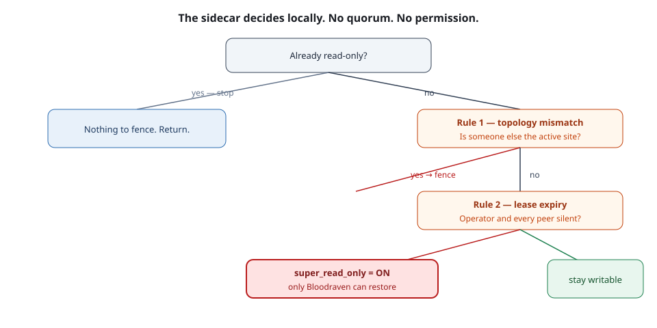

Self-fencing: the sidecar's two rules
The sidecar stops its own MySQL writing when it can no longer confirm it is the active site. Two rules, evaluated in a fixed order, plus a startup safety net that is not a rule at all.
By the end of this topic you can
- Name the two rules the fencing monitor evaluates each tick and the order it evaluates them in
- Explain why one reachable peer keeps a primary writable, and why that is not a quorum
- Say what the startup safety net does before MySQL is allowed to accept writes
Scale the operator to zero and watch playground carry on:
kubectl -n bloodraven-playground scale deployment/bloodraven --replicas=0Press + Increment: the write still lands on iad. Nothing pages, nothing promotes, nothing fences. That is
correct and it is the point — “A healthy primary and replica keep serving reads and writes with zero
operator involvement. The operator is on the failure-detection and promotion path, not the request
path.” So ask the opposite question. With the operator gone, what would ever stop iad accepting
writes if it could no longer confirm it is still the active site? Not the operator. The sidecar.
Two rules, evaluated in order
Every MySQL pod runs a bloodraven-sidecar container, and inside it a FencingMonitor. Each tick it
pings the operator’s /healthz, reads the operator’s /active-site, pings every peer sidecar’s
/peer/ping, reads every peer’s /peer/active-site — and then evaluates. Evaluation runs two
rules, in FencingMonitor.evaluate (internal/sidecar/fencing.go):
- Rule #1 — topology mismatch. The cached operator-authoritative active site is known and is not this site. Fence immediately, regardless of lease timing.
- Rule #2 — lease expiry. The operator and every peer have been silent for longer than
leaseTimeout. Fence.
Order is the lesson. Rule #1 fires and returns. A site that has learned the active site is somebody else fences without ever consulting the lease — which is exactly the stale-primary case, where peers are perfectly reachable and rule #2 would stay quiet forever.
Before either rule, the monitor reads @@read_only and returns early if it is set. A read-only
instance never self-fences, because there is nothing left to fence. That single line is why the
replica’s monitor is a permanent no-op, and why “the sidecar fenced it” is never the explanation for
a site that was already read-only.

Put these in the order they happen.
- Read @@read_only — Already read-only? Return. A read-only instance has nothing left to fence, so the rest of the tick is skipped entirely.
- Rule #1 — topology mismatch — Cached authoritative activeSite is non-empty and != mySite? Fence and return. The lease is never consulted.
- Rule #2 — lease expiry — Operator silent beyond leaseTimeout AND every peer silent beyond leaseTimeout? Fence. Either one answering suppresses it.
- Otherwise, nothing — No third rule exists. The monitor takes no action and waits for the next peerCheckInterval tick.
The thing that is not a rule
Server.RunSafetyNet (internal/sidecar/server.go) is a separate one-shot, called from
cmd/sidecar/main.go. It completes before the FencingMonitor is constructed, so it is not a
third rule and never runs again. Anything that presents it beside the two rules is describing the
sidecar’s startup, not its steady state.
It fences first and asks afterwards. On boot it sets super_read_only=ON, then queries the operator
for the active site, and only clears the fence if the answer names this site. So it fails closed by
staying fenced rather than by actively fencing — and it has three distinct exits, each with its own
log line:
| Log line (verbatim) | What actually happened |
|---|---|
safety net: could not query active site, staying fenced | The operator was unreachable or answered badly. The sidecar refuses to guess. |
safety net: no active site reported by operator, staying fenced | The operator answered, and admitted it has no active site yet. |
safety net: confirmed standby site, staying fenced | The operator answered with a different site. This pod is a standby and stays that way. |
Learn the prefixes, because in a log bundle they mean different things. A safety net: line is a pod
that has never been allowed to write since it started. A SELF-FENCING: / SELF-FENCED: line
from the monitor is a pod that was writing and lost the argument. Same read-only outcome, opposite
incident.
Where the belief comes from: Adopt versus Set
The monitor’s TopologyCache has two writers with deliberately different tempers
(internal/sidecar/topology_cache.go):
Set— used for values read straight from the operator. Unconditional overwrite, no timestamp comparison, because “the operator is always authoritative”.Adopt— used for peer-relayed views. Returnsfalseand changes nothing unless the peer’sobservedAtis strictly newer than the cached value. A stale peer can never drag you backwards.
That asymmetry is the entire trust model, expressed in two method names. Peers are a relay, not an authority.
The lease numbers, and the trap inside them
spec.sidecar.leaseTimeout defaults to 20s; spec.sidecar.peerCheckInterval defaults to 5s.
Three CEL rules guard them at admission: peerCheckInterval >= 1s, leaseTimeout >= 3s, and
leaseTimeout >= 3 × peerCheckInterval. The shipped pair sits exactly on that floor — 3 × 5 s = 15 s,
which 20 s clears with 5 s to spare — so a lease covers 20 / 5 = 4 consecutive ticks of silence.
Raise peerCheckInterval to 10 s alone and 3 × 10 s = 30 s > 20 s: the API server rejects the object.
You must move both.
Now the hard part. Rule #2 requires the operator and every peer to be silent for the whole window.
One reachable peer keeps the primary writable. That is documented as “retained compatibility
behavior, not a quorum guarantee” — no counting, no majority, no tie-break. And a role: read-only
reader counts as a peer: it relays topology and answers /peer/ping, and “A reachable peer without
fresh authoritative topology can still suppress the lease-only all-peers-unreachable fence.”
So adding a reader makes the lease fence less likely to fire. On playground today, iad has two
peers — pdx and reader — which means rule #2 needs three parties (operator + 2 peers) silent for
the full 20 s, up from two before the reader existed. Sit with that before you size your next group.
A reader you added for read scaling has quietly widened the window in which an isolated primary keeps
accepting writes. It has not made rule #1 weaker — but rule #1 needs someone to tell it the truth.
What fencing actually does to MySQL
SET GLOBAL super_read_only = ON is not a switch that cuts writers off.
- It blocks while other clients have an ongoing statement, an active
LOCK TABLES WRITE, or an ongoing commit — so a fence call can sit there for seconds. It fails outright if the issuing session holds explicit locks or a pending transaction. - An error is not proof it did nothing: “cancelling the context tears down the client connection, it does not roll back a write the server already applied.”
super_read_onlyis the real barrier: it “prohibits client updates even from users who haveCONNECTION_ADMINorSUPER”, whichread_onlyalone does not. Settingsuper_read_only=ONimplicitly forcesread_only=ON; settingread_only=OFFimplicitly forcessuper_read_only=OFF.- Replication threads keep writing under it. That is precisely why a fenced site is still a working replica.
- It does not close sockets. A session that survives the fence can serve stale reads until the site is next promoted or demoted.
You can now look at a read-only site and name the cause: rule #1 if a live operator disagrees about the active site, rule #2 only if operator and every peer went quiet, and the startup safety net if the pod never got permission in the first place. Next question: what happens when two sites both believe they are right at the same time?
Flashcards
FencingMonitor rule #1
Topology mismatch: the cached operator-authoritative active site is non-empty and is not this site, so fence immediately and return without consulting the lease.
FencingMonitor rule #2
Lease expiry: the operator AND every peer have been silent for longer than leaseTimeout.
First thing a FencingMonitor tick does, before either rule
Reads @@read_only and returns early if it is set — a read-only instance never self-fences.
spec.sidecar.leaseTimeout and spec.sidecar.peerCheckInterval defaults
leaseTimeout 20s, peerCheckInterval 5s.
The three CEL invariants on spec.sidecar
peerCheckInterval >= 1s, leaseTimeout >= 3s, and leaseTimeout >= 3 x peerCheckInterval.
TopologyCache.Adopt
Writes a peer-relayed view only when its observedAt is strictly newer than the cached value; otherwise it returns false and changes nothing.
TopologyCache.Set
Overwrites the cached active site unconditionally, with no timestamp comparison, because the operator is always authoritative.
What setting super_read_only=ON does to read_only (and the reverse)
Setting super_read_only=ON implicitly forces read_only=ON; setting read_only=OFF implicitly forces super_read_only=OFF.
Log line: safety net: no active site reported by operator, staying fenced
The operator answered the startup query but named no active site, so this pod stays fenced and has never been allowed to write.
What a fenced MySQL site can still do
Keep applying replication — replication threads are permitted under super_read_only — so a fenced site remains a working replica.
Quiz
Show answer
Answer: Rule #1 — the cached authoritative active site was a different site to pdx
Rule #2 needs the operator AND every peer silent beyond leaseTimeout; here both were answering, so it cannot have fired — that rules out both rule #2 options. The second option also misdescribes the lease: it tracks reachability of /healthz and /peer/ping, not any per-site role confirmation. The third option confuses two endpoints — a failed /active-site read leaves the topology cache to age silently and is not a lease signal at all. The safety net is out because its lines are prefixed safety net: and it runs once at boot, before the monitor exists; a SELF-FENCING: line can only come from the monitor. That leaves rule #1: the monitor learned, from the operator or relayed by a peer, that the active site is somebody else, and fenced immediately without consulting the lease. (objective 1)
Rule #2 needs the operator AND every peer silent beyond leaseTimeout; here both were answering, so it cannot have fired — that rules out both rule #2 options. The second option also misdescribes the lease: it tracks reachability of /healthz and /peer/ping, not any per-site role confirmation. The third option confuses two endpoints — a failed /active-site read leaves the topology cache to age silently and is not a lease signal at all. The safety net is out because its lines are prefixed safety net: and it runs once at boot, before the monitor exists; a SELF-FENCING: line can only come from the monitor. That leaves rule #1: the monitor learned, from the operator or relayed by a peer, that the active site is somebody else, and fenced immediately without consulting the lease. (objective 1)
Show answer
Answer: The pod started, fenced itself before asking anything, and the operator named a different site as active — it has never been allowed to write
The safety net: prefix places this before the monitor was even constructed, so no rule fired and the pod never held writes — that eliminates the rule #1 and rule #2 options, both of which describe a pod that was writing and lost the argument (and both of which would log SELF-FENCING:). The 'could not reach the operator' option names a real safety-net exit, but a different one: that path logs safety net: could not query active site, staying fenced. confirmed standby site means the operator answered, and named a site other than this one. The distinction matters in triage: a safety-net line is a pod that never got permission, a monitor line is a demotion. (objective 3)
The safety net: prefix places this before the monitor was even constructed, so no rule fired and the pod never held writes — that eliminates the rule #1 and rule #2 options, both of which describe a pod that was writing and lost the argument (and both of which would log SELF-FENCING:). The 'could not reach the operator' option names a real safety-net exit, but a different one: that path logs safety net: could not query active site, staying fenced. confirmed standby site means the operator answered, and named a site other than this one. The distinction matters in triage: a safety-net line is a pod that never got permission, a monitor line is a demotion. (objective 3)
Show answer
Answer: Only read_only=ON is in effect on that instance; read_only permits updates from CONNECTION_ADMIN or SUPER
read_only is the weaker of the pair — the server 'permits no client updates except from users who have the CONNECTION_ADMIN privilege (or the deprecated SUPER privilege)'. super_read_only is the actual barrier, prohibiting client updates 'even from users who have CONNECTION_ADMIN or SUPER'. So a SUPER write landing means the stronger flag is not set. The second option invents a grandfathering rule that does not exist: the variable is evaluated per statement, not per session, which is exactly why fencing does not need to close sockets. The third option is backwards — the restriction is on client updates by privilege, not on binlog generation. The fourth confuses direction: replication threads apply what the source sent, they do not resurrect a locally rejected statement. (objective 1)
read_only is the weaker of the pair — the server 'permits no client updates except from users who have the CONNECTION_ADMIN privilege (or the deprecated SUPER privilege)'. super_read_only is the actual barrier, prohibiting client updates 'even from users who have CONNECTION_ADMIN or SUPER'. So a SUPER write landing means the stronger flag is not set. The second option invents a grandfathering rule that does not exist: the variable is evaluated per statement, not per session, which is exactly why fencing does not need to close sockets. The third option is backwards — the restriction is on client updates by privilege, not on binlog generation. The fourth confuses direction: replication threads apply what the source sent, they do not resurrect a locally rejected statement. (objective 1)
Show answer
Answer: False
The reversal: an extra peer makes rule #2 less likely to fire, not more. Rule #2 requires the operator and every peer to be silent for the full leaseTimeout, so each additional peer is one more party that can single-handedly suppress the fence — and a reader counts as a peer, since it answers /peer/ping and relays topology. 'A reachable peer without fresh authoritative topology can still suppress the lease-only all-peers-unreachable fence. This is retained compatibility behavior, not a quorum guarantee.' Nothing counts votes or requires a majority: one reachable reader is enough to keep an otherwise isolated primary writable. Size your group knowing that a reader added for read scaling widened that window. (objective 2)
The reversal: an extra peer makes rule #2 less likely to fire, not more. Rule #2 requires the operator and every peer to be silent for the full leaseTimeout, so each additional peer is one more party that can single-handedly suppress the fence — and a reader counts as a peer, since it answers /peer/ping and relays topology. 'A reachable peer without fresh authoritative topology can still suppress the lease-only all-peers-unreachable fence. This is retained compatibility behavior, not a quorum guarantee.' Nothing counts votes or requires a majority: one reachable reader is enough to keep an otherwise isolated primary writable. Size your group knowing that a reader added for read scaling widened that window. (objective 2)
Show answer
Answer:
SET GLOBAL super_read_only = ON does not cut writers off — it blocks while other clients have an ongoing statement, an active LOCK TABLES WRITE, or an ongoing commit, until those locks are released and the statements and transactions end. That is the multi-second wait: the fence is queuing behind live write traffic on the very primary it is trying to demote. Separately, the statement fails outright if the issuing session holds explicit LOCK TABLES locks or a pending transaction. The error must not be read as 'the fence did not land': cancelling the context tears down the client connection, it does not roll back a write the server already applied, so an error means 'unknown'. Treating it as a definite failure is what once made the monitor re-fence a site it had just promoted; the correct move is to re-read the instance and find out.
A full-credit answer shows: A strong answer covers: (a) the SET blocks on ongoing statements, LOCK TABLES WRITE, or ongoing commits, so the delay is contention with live traffic rather than a slow operator; (b) it fails outright when the issuing session holds explicit locks or a pending transaction; (c) an errored SET GLOBAL may still have landed, because tearing down the connection does not roll back an applied write, so the result is ambiguous and must be resolved by re-reading rather than assumed to be a failure. Mentioning that fencing does not close sockets, so surviving sessions can still serve stale reads, is a bonus, not a requirement.
Both behaviours come from MySQL, not from Bloodraven: the fence is a blocking SET GLOBAL, and its failure mode is ambiguous rather than clean. An engineer who assumes the fence is instantaneous will misread a slow demotion as a hung sidecar, and one who assumes an error means 'not fenced' will re-fence a site that is already fenced — potentially one the operator has just promoted. (objective 1)
Sample answer
SET GLOBAL super_read_only = ON does not cut writers off — it blocks while other clients have an ongoing statement, an active LOCK TABLES WRITE, or an ongoing commit, until those locks are released and the statements and transactions end. That is the multi-second wait: the fence is queuing behind live write traffic on the very primary it is trying to demote. Separately, the statement fails outright if the issuing session holds explicit LOCK TABLES locks or a pending transaction. The error must not be read as 'the fence did not land': cancelling the context tears down the client connection, it does not roll back a write the server already applied, so an error means 'unknown'. Treating it as a definite failure is what once made the monitor re-fence a site it had just promoted; the correct move is to re-read the instance and find out.
A full-credit answer shows
A strong answer covers: (a) the SET blocks on ongoing statements, LOCK TABLES WRITE, or ongoing commits, so the delay is contention with live traffic rather than a slow operator; (b) it fails outright when the issuing session holds explicit locks or a pending transaction; (c) an errored SET GLOBAL may still have landed, because tearing down the connection does not roll back an applied write, so the result is ambiguous and must be resolved by re-reading rather than assumed to be a failure. Mentioning that fencing does not close sockets, so surviving sessions can still serve stale reads, is a bonus, not a requirement.
Both behaviours come from MySQL, not from Bloodraven: the fence is a blocking SET GLOBAL, and its failure mode is ambiguous rather than clean. An engineer who assumes the fence is instantaneous will misread a slow demotion as a hung sidecar, and one who assumes an error means 'not fenced' will re-fence a site that is already fenced — potentially one the operator has just promoted. (objective 1)